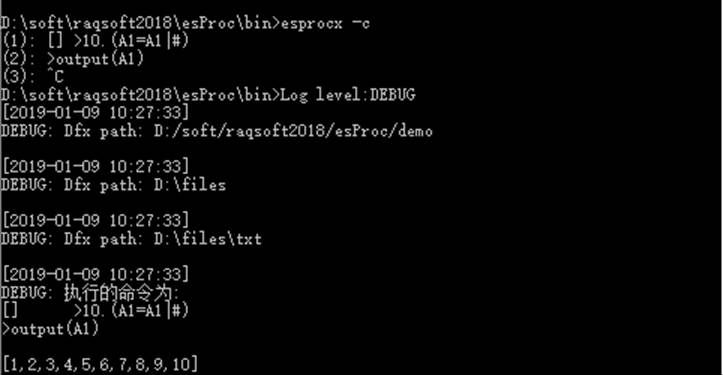
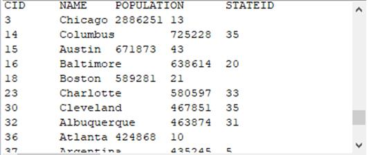
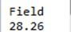
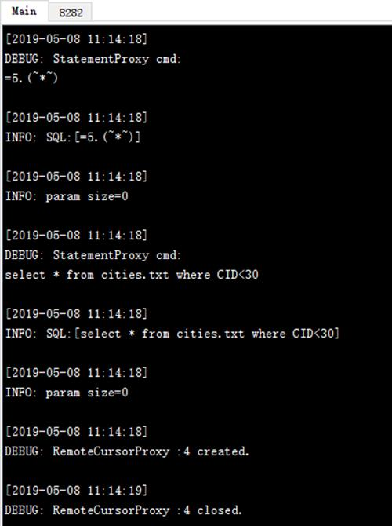
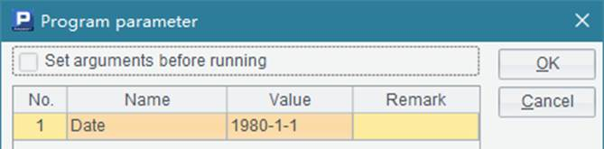
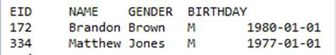

To use an esProc file in the Java application, besides calling the cellset file, you can also execute the statement directly. That is to say, the invocation of a cellset file can be automatically executed as a call statement. Let¡¯s look at how to do this. For example:
// execute the statement directly and return a result set
st =con.createStatement();
ResultSet rs1 = st.executeQuery("=age(date(\"1/1/1990\"))");
ResultSet rs2 = st.executeQuery("=5.(~*~)");
Here the method of executeQuery is used to directly execute an esProc expression starting with = and return its result as a result set. Note that an escape character needs to precede the double quotation marks enclosing the expression. Here¡¯s the output file if the similar code is used to output the result sets:

Notice that if a returned result is a sequence, JDBC will return a one-column-and-multiple-row result set. There¡¯s another method to call the statement:
// first judge if there exists a result set; get it if there is one
boolean hasResult1 = st.execute("=age(date(\"1/1/1990\"))");
ResultSet rs1,rs2;
if (hasResult1) {
rs1 = st.getResultSet();
}
boolean hasResult2 = st.execute("=5.(~*~)");
if (hasResult2) {
rs2 = st.getResultSet();
}
Based on the statement being executed, the execute function will return a value to show whether there is a result set. The code is functionally equivalent to the previous one.
If parameters are needed in the statement, use the operator - (x1, x2,¡) to compute the expressions successively and return the last result. For example:
st =con.createStatement();
ResultSet rs1 = st.executeQuery("=(pi=3.14,r=4,r*r*pi)");
The above code computes the area of a circle. The output result set is as follows:

The parameters used in a statement will be called in a fixed format arg1,arg2,¡ according to the order set for them in PreparedStatement. For example:
PreparedStatement pst = con.prepareStatement("=arg1*arg1*arg2");
pst.setObject(1,3);
pst.setObject(2,3.14);
ResultSet rs = pst.executeQuery();
The code computes the area of a circle with a radius of 3, and returns the following result set:

The data set query statement starting with $ can be used with esProc JDBC. For example:
// execute the data set query statement
st =con.createStatement();
ResultSet rs1 = st.executeQuery("$(demo) select * from CITIES where POPULATION > 2000000");
Note that demo data set used here needs to be configured as automatically connected. The result is as follows:

Use the file name to call a cellset file so that call function can be omitted. For example:
st =con.createStatement();
boolean hasResult1 = st.execute("createTable3 30,\"California\"");
The cellset file - createTable3.dfx – will be called during the execution. If any parameter needs to be set for the file, it should be an actual value separated from the file name by a space. The above statement returns the same multiple result sets as those returned using the preceding method:
esProc JDBC also supports executing a piece of cellset code with multiple lines and columns in one statement. To do this, compose the code into a string, with lines separated by \n and columns of the same line separated by \t. For example:
ResultSet rs = st.executeQuery("=[1,1]\nfor 10\t>A1=A1|(A1.m(-1)+A1.m(-2))\nreturn A1");");
The execution of this string is equivalent to computing the following cellset:
|
|
A |
B |
|
1 |
=[1,1] |
|
|
2 |
for 10 |
>A1=A1|(A1.m(-1)+A1.m(-2)) |
|
3 |
return A1 |
|
Output the returned ResultSet as follows:

We can also execute a simple SQL statement in a Java application to query a data file in the main directory. For example:
st =con.createStatement();
ResultSet rs = st.execute("select * from cities.txt");
The exported ResultSet is like this:

Similarly, we can perform a simple SQL statement within Java code when calling an esProc script. About simple SQL syntax, see Simple SQL.